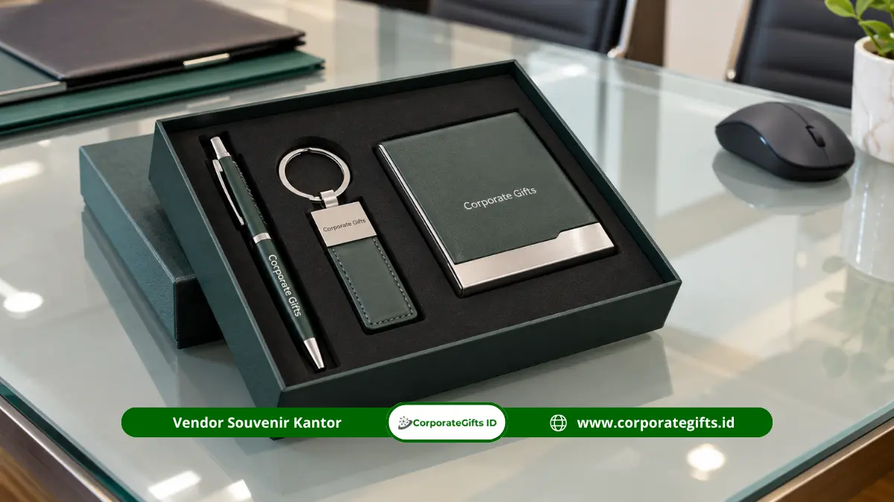

Corporate Gifts ID - Merchandise event kampus Bandung yang paling cocok adalah tote bag, lanyard, tumbler, dan seminar kit berlogo institusi, karena produk-produk ini dipakai peserta setelah acara. Ekosistem kampus di Bandung menghadirkan banyak agenda akademik sepanjang tahun, mulai dari wisuda, seminar, orientasi mahasiswa baru, hingga dies natalis.
Setiap agenda membutuhkan produk yang berbeda, dan pilihan yang tepat menjadikan logo institusi hadir dalam keseharian mahasiswa, dosen, dan tamu undangan. Gambaran umum jenis produk dan alasan pemilihannya juga dapat dipelajari pada ulasan merchandise event Bandung.
Poin Kunci Merchandise Event Kampus Bandung:
- Fungsionalitas Akademik: Produk seperti tote bag, lanyard, dan notebook paling sering dipakai kembali oleh sivitas akademika dalam kegiatan perkuliahan.
- Segmentasi Acara: Kebutuhan wisuda, seminar konferensi, orientasi mahasiswa baru, dan dies natalis memiliki karakteristik cinderamata yang berbeda.
- Presisi Logo Institusi: Peletakan logo resmi universitas dan co-branding sponsor perlu dirancang proporsional agar estetika tetap elegan.
- Seleksi Bahan Kuat: Material kanvas tebal, cotton combed, dan stainless steel menjamin keawetan pemakaian harian mahasiswa.
Merchandise Apa yang Paling Dibutuhkan Event Kampus di Bandung?
Event kampus paling membutuhkan merchandise yang praktis dipakai di lingkungan akademik, yaitu tas jinjing, tali identitas, wadah minum, dan alat tulis. Produk-produk ini menjawab kebutuhan peserta selama acara dan tetap berguna setelah kegiatan selesai.
Tabel Kebutuhan Merchandise per Jenis Event Kampus
Tabel berikut merangkum produk utama untuk tiap jenis acara kampus di Bandung:
| Jenis Event Kampus | Merchandise Utama | Fungsi Utama Produk |
|---|---|---|
| Wisuda & Yudisium | Tote bag kanvas, box souvenir, pin medali | Kenang-kenangan eksklusif bagi wisudawan dan keluarga |
| Seminar & Konferensi | Seminar kit, lanyard, notebook agenda | Identifikasi peserta dan sarana pendukung mencatat materi |
| Orientasi Mahasiswa (OSPEK) | Kaos angkatan, lanyard, topi custom | Menyatukan tampilan dan menumbuhkan kebersamaan mahasiswa baru |
| Dies Natalis & HUT Kampus | Tumbler SUS304, tote bag, gantungan kunci | Cinderamata apresiasi bagi sivitas akademika dan tamu institusi |
| Lomba & Kompetisi Ilmiah | Kaos jersey, botol minum, paket stiker | Penanda delegasi peserta dan kenang-kenangan perlombaan |
Pilihan produk pada tabel di atas dapat disesuaikan dengan kuantitas peserta dan alokasi anggaran belanja panitia pengadaan.
Merchandise untuk Wisuda dan Kegiatan Akademik
Merchandise wisuda yang tepat adalah produk yang rapi, mudah disimpan, dan pantas diberikan kepada wisudawan maupun tamu keluarga. Wisuda adalah momen sakral sehingga produk yang dibagikan perlu terasa bernilai dan tidak berkesan sekadar pembagian massal biasa.
Tote bag kanvas premium dengan desain bersih, box souvenir berlogo institusi, dan pin logam sering dipilih untuk acara wisuda. Produk yang mudah disimpan cenderung menjadi kenang-kenangan jangka panjang bagi keluarga wisudawan.

Paket gift set eksklusif berisi pulpen metal grafir, card holder kulit, dan gantungan kunci sebagai cinderamata apresiasi wisuda dan kemitraan kampus.
Kerapian kemasan juga memengaruhi kesan, sehingga penataan produk dalam box atau tas berlogo perlu direncanakan sejak awal. Untuk kegiatan akademik lain seperti yudisium atau penyerahan penghargaan dosen berprestasi, pilih produk bernuansa formal dengan warna institusi yang konsisten.
Merchandise untuk Seminar, Orientasi, dan Dies Natalis
Setiap jenis acara kampus memiliki kebutuhan produk yang berbeda, sehingga pemilihan merchandise perlu mengikuti tujuan dan profil pesertanya. Seminar membutuhkan perlengkapan mencatat, orientasi membutuhkan penyeragaman, dan dies natalis membutuhkan produk apresiasi.
Apa Merchandise yang Cocok untuk Seminar dan Konferensi?
Seminar dan konferensi membutuhkan produk yang membantu peserta mengikuti materi dan menandai identitas mereka selama sesi berlangsung. Paket seminar kit instansi yang berisi tas, notebook, dan pulpen memenuhi kebutuhan tersebut dalam satu paket rapi.
- Seminar Kit Terpadu: Berisi tote bag, notebook agenda, dan pulpen promosi berlogo.
- Lanyard dan ID Card: Menggunakan tali lanyard printing tissue dengan pembeda warna peran (peserta, panitia, pembicara).
- Tumbler Minum: Tumbler stainless steel custom sebagai produk pendukung hidrasi selama konferensi.
Merchandise Apa yang Sesuai untuk Orientasi Mahasiswa Baru?
Orientasi mahasiswa baru (OSPEK / PKKMB) membutuhkan produk yang menyeragamkan tampilan mahasiswa baru sekaligus menumbuhkan rasa kebersamaan.
Kaos angkatan dan topi membuat peserta mudah dikenali oleh panitia, sedangkan lanyard memuat identitas dan jadwal kegiatan. Produk yang dipakai beberapa hari berturut-turut perlu memiliki bahan nyaman dan tahan cuci.
- Kaos Angkatan: Kaos katun combed dengan sablon tema orientasi atau fakultas.
- Topi Custom: Topi baseball bordir atau bucket hat untuk kegiatan luar ruang.
- Lanyard & Stiker: Sebagai penanda kelompok gugus mahasiswa.
Apa Souvenir yang Tepat untuk Dies Natalis dan Acara Institusi?
Dies natalis dan perayaan HUT perguruan tinggi membutuhkan produk yang menegaskan identitas kampus sekaligus layak diberikan kepada tamu undangan, alumni, dan dewan penyantun.
- Tumbler Edisi Khusus: Grafir laser logo universitas dan angka tahun perayaan dies natalis.
- Tote Bag Kanvas Eksklusif: Desain seni bertema sejarah atau ikon gedung kampus.
- Gantungan Kunci & Pin Logam: Cinderamata edisi terbatas yang bernilai koleksi.
Bagaimana Cara Menampilkan Logo Institusi dan Identitas Acara pada Merchandise?
Logo institusi sebaiknya diletakkan pada area yang paling mudah terlihat, dengan warna resmi (brand guideline kampus) dan ukuran yang proporsional terhadap bidang produk. Penempatan yang konsisten membantu merchandise langsung dikenali sebagai representasi resmi kampus penyelenggara.
Pada tote bag, logo biasanya berada di tengah sisi depan dengan ruang kosong (white space) yang cukup. Pada lanyard, logo diulang sepanjang tali agar tetap terlihat dari berbagai sudut pandang. Pada tumbler, logo ditempatkan sejajar vertikal pada bagian badan yang mudah dilihat saat digenggam.
Bila acara melibatkan mitra industri atau sponsor pendukung, penggunaan dual-logo (co-branding) perlu ditata agar keduanya terbaca seimbang tanpa saling mendominasi. Tetapkan proporsi ukuran logo sejak awal pembuatan mockup digital 3D.
Bahan dan Spesifikasi yang Cocok untuk Penggunaan Sehari-hari
Bahan yang cocok untuk merchandise kampus adalah material yang kuat, nyaman, dan tahan pemakaian harian, karena mahasiswa dan dosen akan membawanya ke ruang kuliah, laboratorium, dan perpustakaan:
- Kanvas atau Blacu Tebal: Untuk tote bag agar kuat membawa laptop, buku teks, dan dokumen tebal.
- Cotton Combed 24s/30s: Untuk kaos agar sejuk, lembut di kulit, dan menyerap keringat seharian.
- Polyester atau Nylon Halus: Untuk tali lanyard agar tidak mudah kusut dan hasil cetak sublimasi tetap tajam.
- Stainless Steel Food Grade SUS304: Untuk botol minum dan tumbler agar tahan benturan serta aman menjaga suhu minuman.
Lengkapi Event Kampus Anda dengan Merchandise Berbranding
Merchandise event kampus yang tepat menghubungkan identitas institusi dengan kebutuhan nyata peserta melalui produk yang benar-benar dipakai dalam jangka panjang.
Konsultasikan kebutuhan paket tote bag, lanyard, tumbler, dan seminar kit berlogo untuk acara kampus Anda di Katalog Resmi Corporate Gifts atau ajukan estimasi anggaran melalui Formulir Penawaran B2B sekarang.